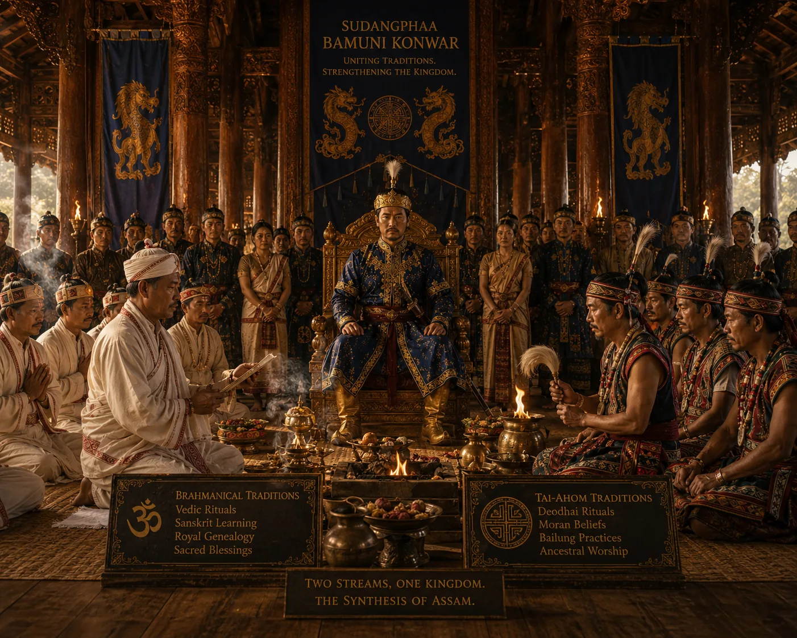

Harmonious Synthesis of Tai and Hindu Vedic Rituals
c. 1400 · The coming of Sukaphaa

Court ceremonies conduct Vedic homa rituals alongside traditional Tai worship of Somdeo and Me-Dam-Me-Phi ancestor rites.
Sources have not yet been catalogued for this record.
People: Sudangphaa (Bamuni Konwar)
Open this scene in the interactive archive · Follow this event on MAP